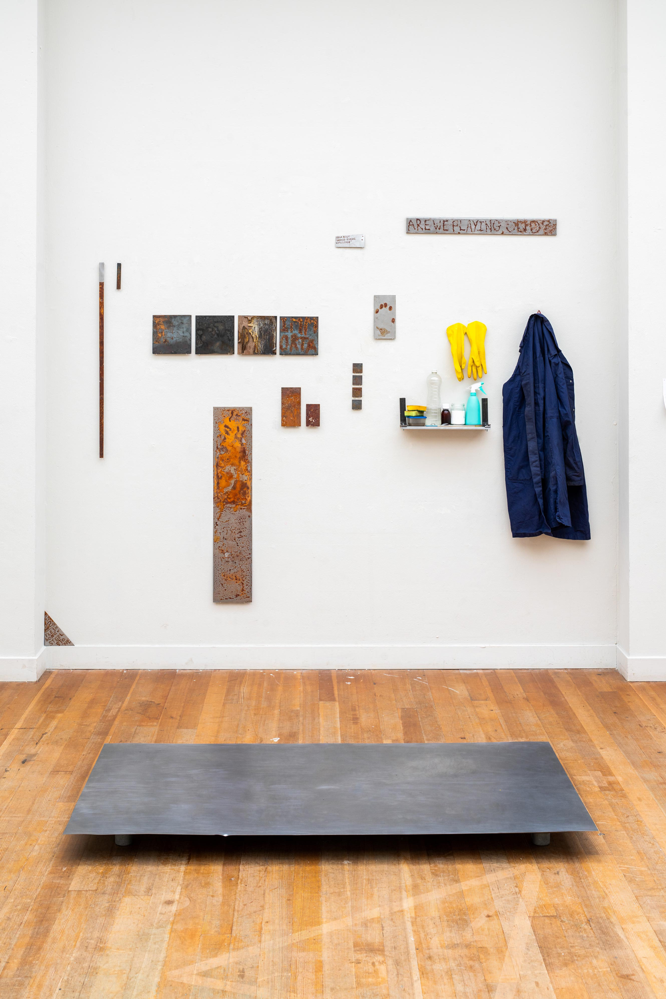
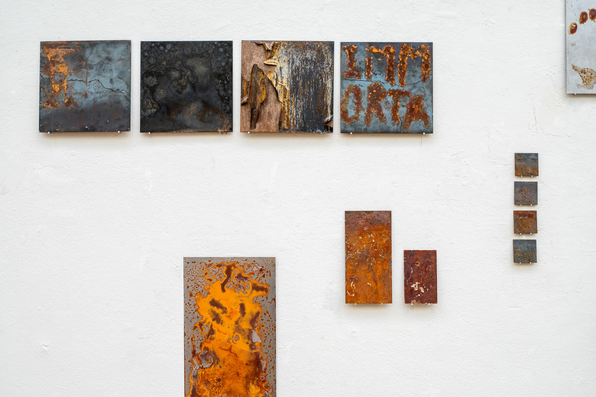
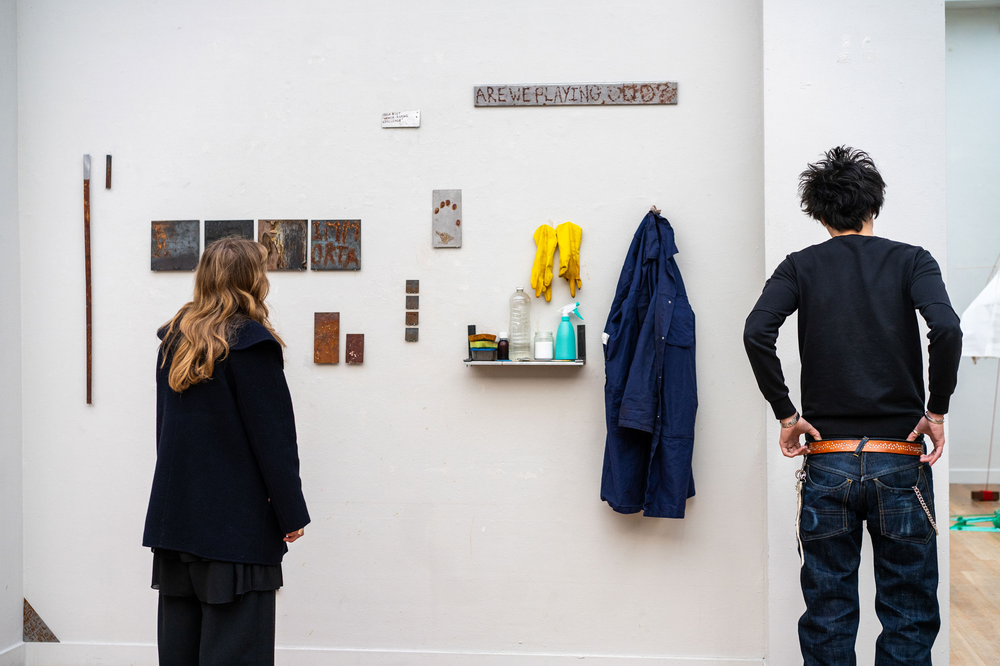
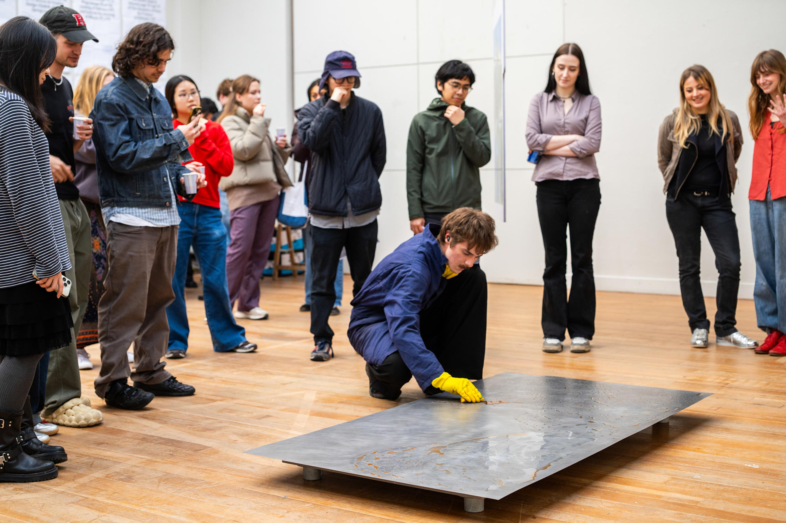
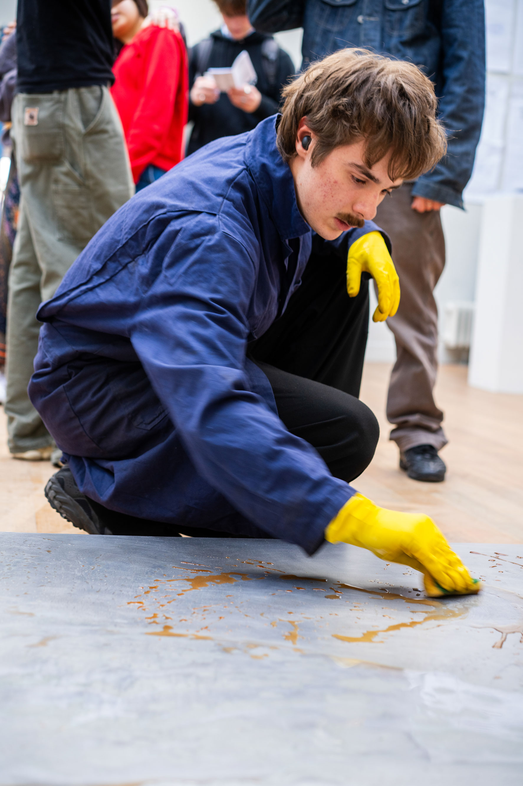

Corrosion Maintenance
2026
Installation Performance
“For the flesh and bone of steel and stone can seem immortal when compared with the likes of man.” — Henry Petroski
Metals form the backbone of our infrastructure, and along with them comes rust. The silent result of oxidation remains one of the most persistent forces acting upon our built environment, demanding enormous efforts to delay, prevent, or reverse its effects.
Yet we continue to imagine the systems around us, such as buildings, roads, pipes, servers, and cars, as stable and enduring. In the pursuit of this imagined permanence, we commit ourselves to suspending them in time, maintaining them eternally.
This work reflects on that fantasy of permanence. Through material experiments, the purpose of maintenance is reversed: care becomes corrosion. By deliberately accelerating processes of decay, the work explores the hidden temporality of the materials that support our lives, confronting the hidden mortality embedded within our infrastructure.




